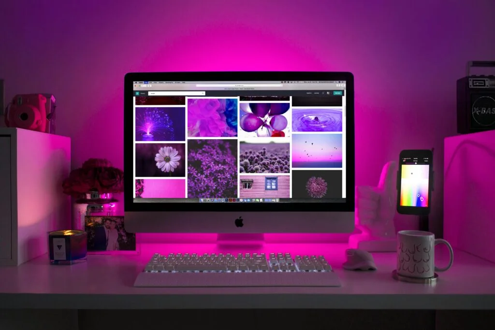

Diseño Web
- ✅ Diseño personalizado en WordPress.
- ✅ Web adaptada a móvil, tablet y ordenador.
- ✅ Estructura clara y navegación sencilla.
- ✅ Ajustes básicos de velocidad y rendimiento.
Diseño páginas web claras y funcionales
Trabajo en webs sencillas, bien estructuradas y adaptadas a lo que realmente necesitas. La idea es que tengas una web que te represente, sea fácil de usar y no se convierta en una carga.
Utilizo WordPress, una herramienta flexible y bastante accesible, que permite crear una web correcta sin complicaciones innecesarias. Me centro en soluciones prácticas y en entender bien cada proyecto antes de tocar nada.
Puedo ayudarte desde el diseño inicial hasta explicarte cómo mantener tu web por tu cuenta, revisando también aspectos básicos de seguridad e integrando tus redes sociales si lo necesitas. Siempre con un trato cercano y explicando las cosas de forma clara.
